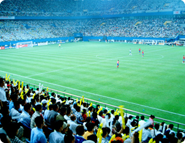

<!-- i-C-a -->
<div data-role="page" id="sub-food-football-and-fiesta-other-worlds-a-common-humanity">
  <script src="js/hammer.js"></script>
  <script src="js/jquery.hammer.js"></script>
  <script src="js/slidebar_food_football_and_fiesta.js"></script>
  <link rel="stylesheet" href="css/style_food_football_and_fiesta.css" />
  <div class="menuhousing"></div>
  <div class="homebtnholder"><div class="homebtnFoodFootballFiesta"></div></div>
  <div class="mpbtnholder"><div class="mpbtnFoodFootballFiesta"></div></div>
  <div class="cpbtnholder"><div class="cpbtnFoodFootballFiesta"></div></div>
  <div class="infobtnholder"><div class="infobtnFoodFootballFiesta"></div></div>
  <div class="credsbtnholder"><div class="credsbtnFoodFootballFiesta"></div></div>
  <div class="menubtnholder"><div class="menubtnFoodFootballFiesta"></div></div>
  
  <!-- <div class="bptitleholder" style="padding-top:14px;"><h1>A common humanity</h1></div> -->
  
  <div id="spacechar">&nbsp;
    <div data-role="content" class="kidzcontent">
      <div class="v-spacer"></div>
      <div class="sidebarleft-half">
			<div id="f1_container" style="visibility:hidden;position:absolute;left:100px;top:270px;">
			  <div id="f1_card">
				<div class="front face">
				  
				</div>
				<div id="backofcard" class="back face center" style="background:url(css/images/9-12/Language_and_Culture/Food_Football_And_Fiesta/Other_Worlds/A_Common_Humanity/What_Makes_A_Nation_Reverse.png) no-repeat;">
				  <div class="returncard" style="position:absolute;left:0px;top:0px;width:362px;height: 60px;"></div>
				  <div id="trueans" style="position:absolute;left: 169px;top: 102px;width: 159px;height: 22px;"></div>
				  <div class="falseans" style="position:absolute;left: 169px;top: 124px;width: 159px;height: 22px;"></div>
				  <div class="falseans" style="position:absolute;left: 169px;top: 150px;width: 159px;height: 22px;"></div>
				  <div class="falseans" style="position:absolute;left: 169px;top: 175px;width: 159px;height: 22px;"></div>
				  <div class="falseans" style="position:absolute;left: 169px;top: 200px;width: 159px;height: 22px;"></div>
				   <div id="Light_Box_Image" style="position:absolute;left: 40px;top: 105px;width: 118px;height: 138px;"></div>
				</div>
			  </div><!--/f1+card-->
			</div><!--/f1_container--> 	
		<a id="quiz_lightbox" style="visibility:hidden;" href="JavaScript:html5Lightbox.showLightbox(0, 'css/images/9-12/Language_and_Culture/Food_Football_And_Fiesta/Other_Worlds/A_Common_Humanity/What_Makes_A_Nation_Hi_Res.png', '');">click here</a>
		<a id="img1" style="visibility:hidden;" href="JavaScript:html5Lightbox.showLightbox(0, 'css/images/9-12/Language_and_Culture/Food_Football_And_Fiesta/Other_Worlds/A_Common_Humanity/Chinese_Lion_Dance_Hi_Res.jpg', '');">click here</a>
        <a id="img2" style="visibility:hidden;" href="JavaScript:html5Lightbox.showLightbox(0, 'css/images/9-12/Language_and_Culture/Food_Football_And_Fiesta/Other_Worlds/A_Common_Humanity/New_Year_Hi_Res.jpg', '');">click here</a>   
        <a id="img3" style="visibility:hidden;" href="JavaScript:html5Lightbox.showLightbox(0, 'css/images/9-12/Language_and_Culture/Food_Football_And_Fiesta/Other_Worlds/A_Common_Humanity/Football_Hi_Res.jpg', '');">click here</a>			
		<div id="zoomwrapper">
          <div id="pol1" class="pPiece" style="left:100px;top:270px;">
             
          </div>
          <div id="pol2" class="pPiece" style="left:75px;top:290px;">
             
          </div>
          <div id="pol3" class="pPiece" style="left:75px;top:290px;">
             
          </div>
          <div id="pol4" class="pPiece" style="left:75px;top:290px;">
             
          </div>
        </div><!--/zoomwrapper-->
      </div>
      
      <div class="bpcontentFoodFootballFiesta-ACommonHumanity">
	  <!-- 
        <p>We humans tend to focus on differences, such as the customs and languages of nations.  But are the differences more important than the things we share with people from other nations?  Some throw tomatoes, others roll cheese down a hill, let off firecrackers or dance through the streets.</p>
 
		<p>All these activities seem very different, but they all do the same thing: they aim to bring people together, to make them feel connected to each other.  In this way, the activity perhaps isn't as important as its objective.  What activities bring your community together?</p>

		<p>Because ideas and things crossed nations and cultures, you have a lot in common with other people. The game of chess came to be played in Europe when the Muslims brought it to Spain in the Middle Ages.  The idea of zero  which originated in India  also entered Europe through Spain, thanks to the Muslims.</p> -->
      </div>
       
      <div class="botlogoholder"><a href="home.html" class="homelinkbh"></a></div>
    </div> <!-- end content -->  
  </div><!--/spacechar-->        
  
    <div class="micbtnholder"><div class="micbtnFoodFootballFiesta" id="playstopACommonHumanity"></div></div>
    <div class="bFoodFootballFiesta"><div class="rwFoodFootballFiesta" id="ACommonHumanityaudiobbtn"></div></div>
    <div class="plFoodFootballFiesta"><div class="plpsFoodFootballFiesta" id="ACommonHumanityaudioplbtn"></div></div>
    <div class="fFoodFootballFiesta"><div class="fwFoodFootballFiesta" id="ACommonHumanityaudiofbtn"></div></div>
    <div id="actualaudio-ACommonHumanity" style="visibility:hidden;"></div>
  <!-- </div> -->
  
  <script>
  // sound setup is in home.html and index.js
    sound = new Audio(); // 'sound' is now an audio object
 
	var playing;
    var paused;
    (function() {
      playing = false;
      paused = true;
      $('div#pol1').css("z-index", 3);
      $('div#pol2').css("z-index", 2);
      $('div#pol3').css("z-index", 1);
      $('div#pol1 > img').css("-webkit-transform", "rotate(0deg)");
      $('#watchLavaFlowholder').css({"visibility":"hidden", "z-index":-10});		
      $('div#pol2 > img').css("-webkit-transform", "rotate(5deg)");
      $('div#pol3 > img').css("-webkit-transform", "rotate(-3deg)");
      $('#watchMtTungurahuaholder').css({"visibility":"hidden", "z-index":-10});		
      $('div#pol4 > img').css("-webkit-transform", "rotate(-3deg)");
      if(sound.canPlayType('audio/mpeg')) {
        $('#actualaudio-ACommonHumanity').html('<audio id="ACommonHumanityaudio" controls preload onpause="playsFoodFootballFiesta()" onplay="pauseFoodFootballFiesta()"><source src="audio/Food_Football_And_Fiesta/A_Common_Humanity.mp3" type="audio/mpeg"></audio>');
      } 
    
      $("#sub-food-football-and-fiesta-other-worlds-a-common-humanity").swipe( { swipeRight:goBack, allowPageScroll:"auto"} );
    })();
    
    $('.homelinkbh').on('tap', function() { bgsoundFoodFootballFiesta.pause(); bgsoundFoodFootballFiesta.currentTime = 0; mainaudiobg.play(); });

    $('.falseans').on('tap', function() {
      alert("Wrong answer");
    });
    $('#trueans').on('tap', function() {
      alert("Correct answer");
    });
    
    $(".returncard").on('tap', function() {
      $('#f1_card').css({"-webkit-transform": "rotateY(0deg)"});
      $('#f1_card').css({"-moz-transform": "rotateY(0deg)"});
      $('#f1_card').css({"-o-transform": "rotateY(0deg)"});
      $('#f1_card').css({"transform": "rotateY(0deg)"});
      setTimeout(function() {
        $("#pol1").css({"visibility":"visible", "z-index":4});
        $('#f1_container').css({"visibility":"hidden", "z-index":0});
      }, 1000);
    });
    
    $("#pol1").on('tap', function() {
      $('#f1_container').css({"visibility":"visible", "z-index":10});
      $(this).css({"visibility":"hidden"});
      $('#f1_card').css({"-webkit-transform": "rotateY(180deg)"});
      $('#f1_card').css({"-moz-transform": "rotateY(180deg)"});
      $('#f1_card').css({"-o-transform": "rotateY(180deg)"});
      $('#f1_card').css({"transform": "rotateY(180deg)"});
    });    
    $("#pol2").on('tap', function() {
      $('#img1')[0].click();
    }); 
	$("#pol3").on('tap', function() {
		$('#img2')[0].click();
	}); 
	$("#pol4").on('tap', function() {
		$('#img3')[0].click();
	}); 
	$("#Light_Box_Image").on('tap', function() {
      $('#quiz_lightbox')[0].click();
    });	
    function goBack() {
      $.mobile.changePage("sub-food-football-and-fiesta-other-worlds.html", {transition: "slide", reverse: true });
    }
    
    function playsFoodFootballFiesta() {
         bgsoundFoodFootballFiesta.play();
    }
       
    function pauseFoodFootballFiesta() {
         bgsoundFoodFootballFiesta.pause();
    }
    /* ******************** */
    /* this is the microphone button */
	
    $("#playstopACommonHumanity").on('tap', function() {
      if(!playing) {
        ACommonHumanityaudio.play();
        $('.micbtnFoodFootballFiesta').css('background-position-x', '-81px');
        playing = true;
        paused = false;
      } else {
        ACommonHumanityaudio.pause(); ACommonHumanityaudio.currentTime = 0;
        $('.micbtnFoodFootballFiesta').css('background-position-x', '0px');
        playing = false;
        paused = true;
      }
    });
    
    $("#ACommonHumanityaudioplbtn").on('tap', function() {
      if(!paused) {
        ACommonHumanityaudio.pause();
        paused = true;
      } else {
        ACommonHumanityaudio.play();
        paused = false;
      }
	  
      //$(".audiopanel").css({"backgroundPosition":"-197px 0px"});
    });
    
    $("#ACommonHumanityaudiofbtn").on('tap', function() {
      var ctime = ACommonHumanityaudio.currentTime;
      ACommonHumanityaudio.currentTime = ctime + 10;
    });
    
    $("#ACommonHumanityaudiobbtn").on('tap', function() {
      var ctime = ACommonHumanityaudio.currentTime;
      ACommonHumanityaudio.currentTime = ctime - 10;
    });
    
    $("#ACommonHumanityaudiopsbtn").on('tap', function() {
      ACommonHumanityaudio.pause();
      //$(".audiopanel").css({"backgroundPosition":"0px 0px"});
    });
  </script>
	<script src="js/fourcardLogic.js"></script>  <!-- for card dragging effects -->
</div> <!--//home-->